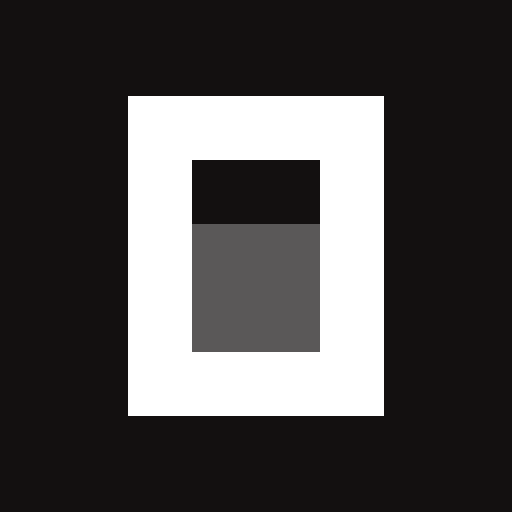

人工智能
API 提供商
添加

OpenCode Go
https://opencode.ai/zen/go/v1
42 API 模型
给智能体发消息…
OpenCode Go · deepseek-v4.1-flash
发送
OpenCode Go · 5小时 3% · 周 12%
OpenCode Go 用量
供应商
OpenCode Go
接口地址
https://opencode.ai/zen/go/v1
当前模型
deepseek-v4.1-flash
当前会话 ID
9f2c1d4e-7a83-4b21-9e05-6c7d8a1b2f30
复制
5 小时（滚动窗口）
已用 3%
3 小时 29 分后重置
每周
已用 12%
5 天 17 小时后重置
每月
已用 9%
28 天 1 小时后重置
最后更新：14:26:31
刷新